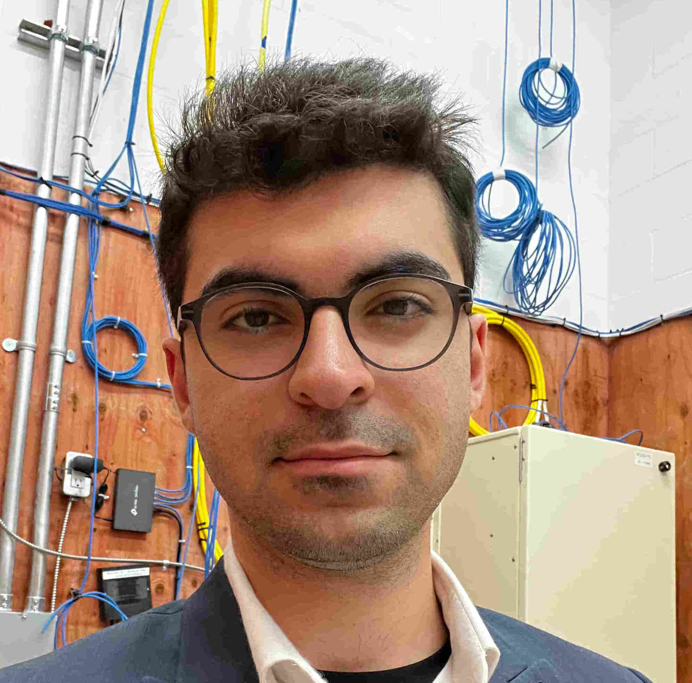

Full Stack Software Engineer
💻 Full-Stack Software Engineer with 3+ years of experience building software products and platforms from initial development to production.
🎓 I am a student at Simon Fraser University, majoring in Computing Science with a minor in Mathematics. I have experience in full-stack development, software testing, backend systems, and embedded electronics, supported by strong technical knowledge, leadership, adaptability, and work ethic.
I have developed more than six personal projects across web development, front-end and back-end systems, robotics, embedded systems, algorithm optimization, and systems programming. These projects have given me practical experience in designing, developing, testing, and improving software solutions.
Feel free to reach out through LinkedIn or email, I’m always happy to connect, so don’t hesitate to send me a message! 👋
Able to run a limited version of risc-v instruction set.
Built in C, this project implements a RISC-V disassembler and emulator capable of decoding machine instructions and executing a subset of the RISC-V instruction set architecture.
Self-navigated robot, using IR sensors.
Built with Arduino, this autonomous line-following robot uses five infrared sensors and PID control to track a dark line accurately, with optional Bluetooth control and real-time tuning through an Android interface.
A 2d Aracde game written entirely in Java and Swing.
Off the Menu™ is a top-down 2D arcade tile-based game built in Java using Swing. In the game, you play as a pig trying to escape a farm to avoid being turned into bacon. To unlock your path to freedom, you must explore the map and rescue your fellow pigs while navigating through a maze of obstacles.
A distributed and expandable network of IP security cameras.
Under development.
Built using ESP32-CAM devices and compatible ESP Wi-Fi modules, EverEyes is a distributed and expandable security camera system designed for decentralized surveillance and wider area coverage.
Software Development / Mid-level | Remote
Network Ops Technician / Mid-level - Full Stack | Vancouver, BC
Technology Instructor | Burnaby, BC
Simon Fraser University
Computing Science and Mathematics
Expected: Sep, 2027
English: Professional
Persian Native